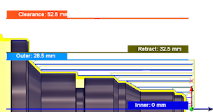

Containment around all the machinable stock.
Shown in Orange, this controls the radius where the tool rapids to at the start and end of the toolpath. The tool approaches and retracts from outside the stock along the Z axis to this radial clearance offset.
|
Containment around all the machinable stock. |
 |
Toolpath for the area shown above. |
 |
Containment restricting an inner area. |
 |
Eliminating outer toolpaths for pre-machined areas. |
NOTE: The Clearance radius must be larger than, or equal to, the Outer radius to generate a valid toolpath.